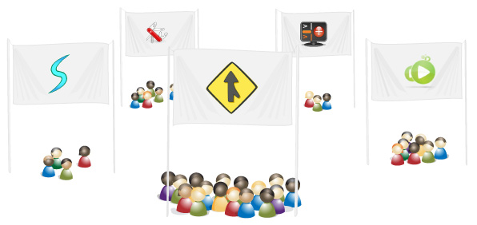

6 of 11
Building community

Find and work with the right people. Launchpad helps you build a rich social network around projects, through informative profiles of individual contributors and a powerful, unified teams system. Create teams to collaborate on your project or across projects, and use teams to control commit rights on branches or permissions on bugs. Create mailing lists for teams to help them build consensus. Map out the social structure of your project to show the world how you organise yourselves and make it easier to arrange online meetings across all the time zones where your contributors can be found.
Mailing lists
Mailing lists are the heart of free software discussion and consensus building.

Teams in Launchpad can each have their own mailing list with everything you’d expect: simple subscription management, automatic archiving and virtually no need for list administration. Even better, Launchpad can take a global view of netiquette, so the burden of administration is shared across all communities using Launchpad mailing lists.
Team responsibility
Sharing work amongst a group of people is easy in Launchpad.

Teams are interchangable with individuals in just about any role in Launchpad, such as bug triage, owning a branch of a code or publishing software packages through a PPA. You can create as many teams as you want, and you can make teams hierarchical (so that all the members of one team are also automatically members of another). Launchpad’s team support is unique among tools for free software developers.
People profiles
Connecting with the right people is what makes free software projects successful.
When you come across work that impresses you, one click on the owner’s name lets you see at a glance what they’ve worked on, what interests them and how to contact them.
Mentoring
Grow your community through mentoring eager new contributors.

Launchpad’s mentoring framework lets you connect new and enthusiastic developers with experienced contributors. Flag bugs or blueprints that are bite–sized chunks of work suitable for new participants, and offer to help someone who is interested in becoming a contributor.
Karma
Karma separates the heavy contributors from the newbies!
Get a snapshot of someone’s activity in Launchpad with their karma report. It’s Launchpad’s short–hand indication of each individual’s current activity. File a bug: get karma. Publish a branch of code: get karma. Answer a support question: get karma. Launchpad distills all recent activity down to a relative karma value, but you can also peek behind the headline number to see where and how frequently people have been contributing.